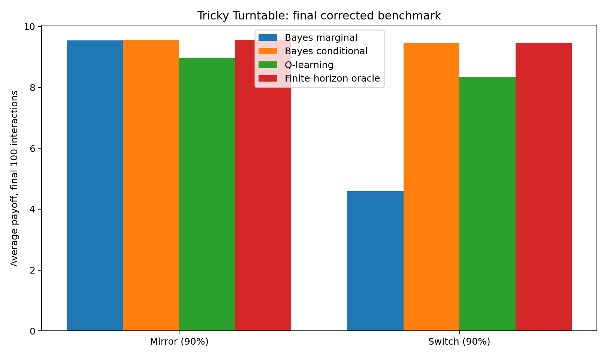
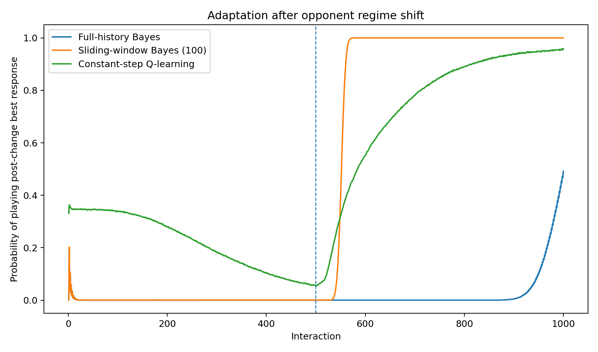

Mario Party: Tricky Turntable
Game theory, Bayesian opponent modelling and reinforcement learning in a simple adaptive-agent environment.
Overview
This project starts from Tricky Turntable, a simple game inspired by Mario Party that can first be solved analytically using game theory.
I then turn the game into an adaptive-agent benchmark: instead of assuming that the opponent follows a fixed equilibrium strategy, an agent must learn how the opponent behaves from repeated interactions and adapt its own decisions accordingly.
The game
Each player chooses between three actions: pressing zero, one or two buttons. The resulting position on the turntable depends on the sum of both actions modulo four.
Using the payoff vector (10, 5, 2, −1), the payoff matrix for the learning agent is
[[10, 5, 2],
[5, 2, −1],
[2, −1, 10]]
In the benchmark strategic game, eliminating the dominated action gives an equilibrium that mixes equally between actions 0 and 2, with an expected payoff of 6.
Learning agents
The project compares three approaches with different assumptions about the opponent.
- Marginal Bayesian learning estimates only the opponent's unconditional action frequencies.
- State-conditioned Bayesian learning estimates the opponent's behavior conditional on the agent's previous action.
- Tabular Q-learning does not explicitly model the opponent and instead learns state-action values directly from observed rewards.
This creates a simple comparison between explicit opponent modelling and model-free reinforcement learning.
Reactive opponents
The first experiment introduces opponents whose actions depend on the learner's previous action.
- Mirror copies the learner's previous action with 90% probability.
- Switch usually maps action 0 to 2, action 2 to 0, and keeps action 1 unchanged.
This distinction is important because a learner that only estimates unconditional action frequencies cannot represent the strategic structure of a reactive opponent.
Benchmark results

Against the Switch opponent, the limitation of the marginal model becomes particularly clear. Because the opponent reacts to the learner's state, unconditional frequencies discard crucial information.
The conditional Bayesian model instead learns the relevant state-dependent response and reaches near-oracle performance. In the final 100 interactions against Switch, its average payoff is approximately 9.47, essentially matching the finite-horizon oracle, while Q-learning reaches approximately 8.35.
The experiment illustrates the value of the right inductive bias: when the opponent's behavior has a simple structure that can be modelled, explicit Bayesian opponent modelling can learn substantially faster than a more general model-free approach.
Concept drift
The second experiment asks a different question: what happens when the opponent itself changes strategy?
The opponent initially chooses actions according to (0.8, 0.0, 0.2), before switching halfway through the interaction to (0.2, 0.0, 0.8).
Three adaptive mechanisms are compared: full-history Bayesian learning, sliding-window Bayesian learning, and constant-step Q-learning.

Adaptation results
Full-history Bayesian learning performs poorly after the change because observations from the old regime remain embedded in the posterior. The model is statistically consistent for a stationary environment, but that memory becomes a disadvantage after a structural break.
A sliding-window Bayesian learner solves this problem by retaining only recent observations. In the benchmark, it reaches the adaptation criterion in approximately 60 rounds, compared with 315 rounds for constant-step Q-learning.
Sliding-window Bayesian learning adapts approximately 5.3× faster than Q-learning and reduces post-change cumulative pseudo-regret by roughly 89% relative to full-history Bayesian updating.
What the experiments show
The project illustrates two complementary ideas. First, correctly modelling the structure of another agent can dramatically improve learning efficiency. Second, a statistically richer history is not always better when the environment is non-stationary.
The comparison therefore connects game theory and machine learning: strategic structure determines which information is relevant, while the learning rule determines how quickly that structure can be inferred and updated.
Methods
The experiments are implemented from scratch in Python using NumPy. They combine analytical game-theoretic reasoning, Dirichlet-Bayesian opponent modelling, tabular Q-learning, online adaptation and Monte Carlo simulation.
The implementation is deliberately lightweight and does not rely on a machine-learning framework, making the learning mechanisms and updating rules explicit.
Project status
This is an independent machine-learning project designed as a small controlled laboratory for studying adaptive decision-making. The current benchmark focuses on simple reactive opponents and a single regime shift; natural extensions include richer opponent classes, Bayesian change-point detection and partially observable environments.